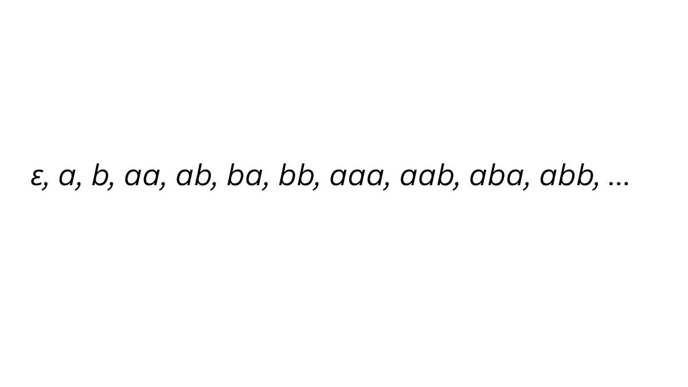
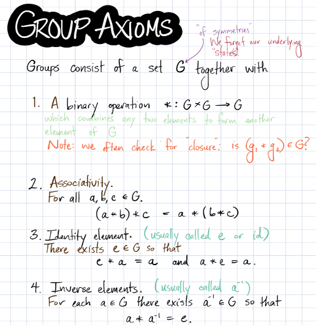
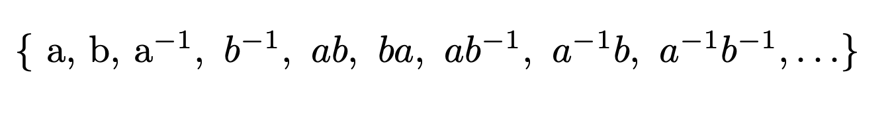

The Monoid
Hello future mathematicians! You will be encountering a lot of brutal concepts throughout the semester, and here is one that would make you interested yet, save you from the stress by exploring some cool idea! let's dive right away, think about the letter, a and b. let's just play with them under the concentration("Hello" + "World" = "HelloWorld"). So, we could have like:

So, what you did informally is the free monoid. You did not know, but you did! How do you know you did this free monoid? Well, the formal definition of a free monoid is as follows:
A free monoid over a set $X$ is the set of all finite sequences (strings or words) formed by elements from $X$, including the empty sequence, together with the operation of concatenation.
It is the "freest" way to form a monoid from generators, meaning that there are no relations between elements other than those required by the monoid axioms: associativity and the existence of an identity element.
So, how do we prove that what we did with a and b is free monoid?
Let $M$ be the set of all finite words formed from the symbols $a$ and $b$, including the empty word $\epsilon$. Define the operation $*$ on $M$ by concatenation: $x * y = xy$. We claim that $(M, *)$ is a monoid.
First, closure holds: if $x$ and $y$ are words in $M$, then $xy$ is again a finite word in $a$ and $b$, so $xy \in M$.
Second, associativity holds: for any $x, y, z \in M$,
$$(x * y) * z = (xy) * z = (xy)z = xyz$$
and
$$x * (y * z) = x * (yz) = x(yz) = xyz.$$
Thus, $(x * y) * z = x * (y * z)$.
Finally, the empty word $\epsilon$ is the identity element, since for every $x \in M$,
$$\epsilon * x = x = x * \epsilon.$$
Therefore, $(M, *)$ is a monoid.
Now, if you read the definition closely, there are free monoids and monoids, which are different things! How? Let's figure out why! Before this, let's remind ourselves about the early weeks of this course. You would first be introduced to the group. If you don't remember, that's alright because we have our sticker!

So, those are the property of the group! Why am I talking about the group all of a sudden from the monoid? It is because the monoids is sorta a group, without the inverse property. But let me explain what I mean by 'sorta'. When we did the concentration of letter an and b, did you notice something? We never get to have $a^{-1}$. It was just $aa$, $bb$, $ba$, $ab$. Remember, this was the free monoids. So, formally, the monoid is following:
Definition: Monoid
A monoid is a set $M$ together with a binary operation $$* : M \times M \to M$$ that satisfies the following properties for all $a, b, c \in M$:
Closure: $a * b \in M$
Associativity: $a * (b * c) = (a * b) * c$
Identity: There exists an element $1_M \in M$ such that $1_M * a = a * 1_M = a$
By now, you would probably know what the group is, and it is the one you will deal with until the last phase of the class. So, it is familar concept, because as you notice, the differece is the monoid do not have an inverse property. Not having an inverse property is a huge difference. Since you are not thinking about the 'undo' the things. For example, if there are no inverse properties, like monoids, you and I do not have to think the little trick when proving, by mutlplying inverse of somehting. With the monoids, it is straightforward now.
You see, even though there are different name for concepts, in abstract algebra, or any other math we are learning is all related. So far, the free monoid gives us a world of words. We start with symbols like $a$ and $b$, and build all finite words from them. But what if we add the inverse property to this structure? What kind of object would we get then? Once we want each generator to have an inverse, we are naturally led to the idea of a free group. Like the free monoids, but we have:

What I mean is, we now have $a^{-1}$ and $b^{-1}$. So now we can "undo" things, just like I mentioned before. More precisely, these inverse symbols satisfy.
$aa^{-1} = e = a^{-1}a$ and $bb^{-1} = e = b^{-1}b$, where $e$ is the identity.
Because of this, whenever a letter is immediately followed by its inverse, that pair cancels. This is the key difference between the free monoid and the free group: in the free group, words can be reduced by cancellation. Looking back, the progression from free monoids to free groups gives a nice picture of how abstract algebra works. We begin with a simple structure: words, concatenation, and the empty word. That gives us a free monoid, and therefore a monoid. But once we ask for inverses, we are pushed into a richer structure, the free group. This is why every group is a monoid, but not every monoid is a group. A group contains everything a monoid has, together with inverses for every element. So in this small journey from words to cancellation, we see one of the central ideas of abstract algebra: different structures are not separate islands, but are linked together in meaningful ways.
So, I believe that this course MATH 4170 is like what I did so far, you get to learn something that looks hmm...not bad... but you get to add one or two, and all of a sudden, there are new names, sounding like you heard before, yet you are not sure what it means until you see the formal proof. As a former student, I want to tell you that we have to make the connection among those concepts, so we can truly be one step closer to a grade of B...
Thank you reading til the end! Hope you learned something!